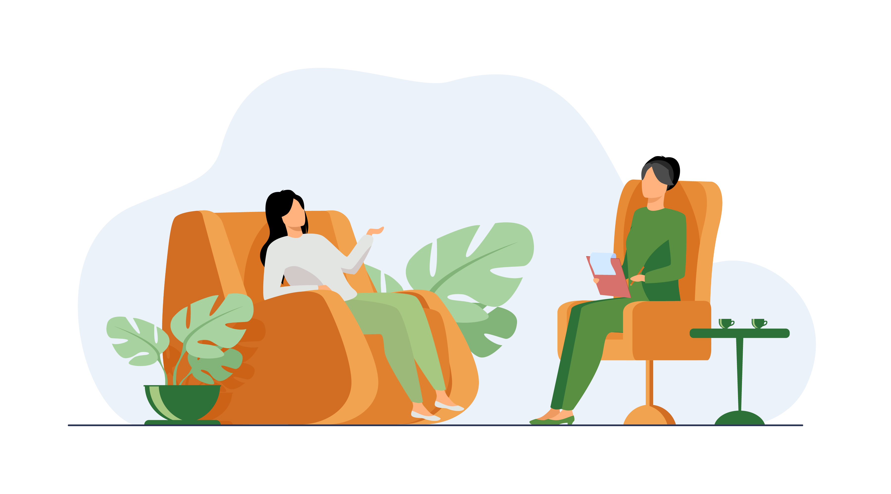

|  |
Self-esteem is a critical aspect of our overall well-being, as it affects how we view ourselves and our abilities. When we have a healthy level of self-esteem, we're more likely to feel confident, motivated, and resilient in the face of challenges. If you're struggling with low self-esteem, there are steps you can take to boost it and improve your overall sense of self-esteem. Here are some helpful tips for building self-esteem.
Identifying your strengths is a crucial step in boosting your self-esteem. Take some time to reflect on your positive qualities and accomplishments. Consider the challenges you've overcome and the skills you've developed. This will help you see yourself in a positive light and boost your confidence. Write down a list of your strengths and accomplishments and keep it somewhere visible as a reminder of your capabilities. Celebrate your successes, no matter how small they may seem. Recognizing and appreciating your strengths can help you feel more self-assured and confident in your abilities.
Taking care of yourself is crucial in building self-esteem. It's important to get enough sleep, eat a balanced diet, and engage in regular exercise to promote physical and mental health. Additionally, make time for activities that bring you joy and prioritize self-care practices like mindfulness, meditation, and relaxation techniques. By prioritizing self-care, you show yourself that you value your well-being, which can boost your self-esteem.
The people we surround ourselves with can have a big impact on our self-esteem. Surrounding yourself with positive, supportive people who believe in you can help boost your confidence and self-worth. Seek out friends and family members who make you feel good about yourself and avoid spending time with people who bring you down or make you feel bad. If you don't have many positive influences in your life, consider joining a group or community that shares your interests. This can be a great way to meet like-minded people and build new relationships. Volunteering or participating in community events can also help you connect with others who share your values and interests. Remember that it's okay to distance yourself from people who bring you down, even if they're family members or long-time friends. Your mental and emotional well-being should always come first, and sometimes that means letting go of toxic relationships. Surrounding yourself with positive people can not only boost your self-esteem but also provide a support system to help you navigate life's challenges.
It's important to set goals that are both realistic and specific. Identify what you want to achieve and break it down into manageable steps. This can help you build a sense of accomplishment and boost your self-esteem. Start with small goals and gradually work your way up to larger ones. Celebrate your achievements along the way, no matter how small they may seem. Remember, every step you take is a step closer to reaching your goals.
Negative self-talk can be damaging to our self-esteem. When you catch yourself engaging in negative self-talk, challenge those thoughts. Ask yourself if they're true and try to reframe them in a more positive light. Focus on your strengths and accomplishments, rather than dwelling on your perceived shortcomings. Another way to challenge negative self-talk is to practice self-compassion. Treat yourself with the same kindness, concern, and understanding that you would offer to a good friend. Acknowledge your mistakes and limitations without judgment or criticism and recognize that no one is perfect. This can help you feel more accepting and forgiving of yourself, which can boost your self-esteem.
Remember, building self-esteem takes time and effort. Be patient with yourself and remember that everyone struggles with self-esteem at some point. By practicing self-care, surrounding yourself with positive people, and challenging negative self-talk, you can boost your self-esteem and improve your overall sense of self-worth